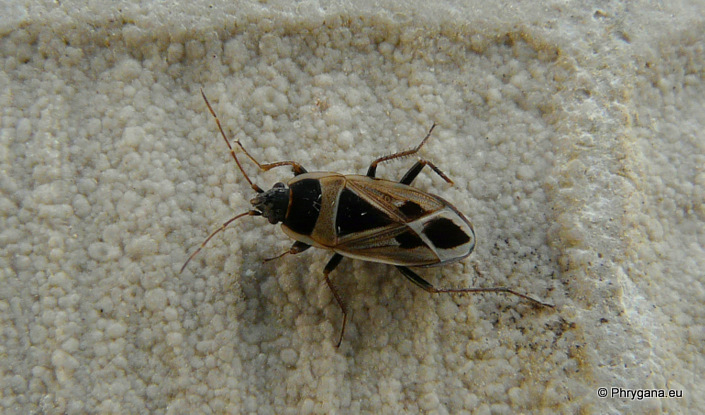

| PHRYGANA | Fauna | Flora |
additions nouveautés |
espèces species |
contact -
info - commentaires phrygana1 (at) gmail.com |
| diversité crétoise -- Cretan diversity | |||||
| Xanthochilus saturnius (Rossi 1790) |
| 212 | Fauna | LYGAEIDAE | Xanthochilus |
 Xanthochilus saturnius Melambes (Agios Giorgos) 16 avril 2010 |
| Synonyme:Rhyparochromus (Xanthochilus) saturnius | |
| en: Mediterranean seed bug | |
| Longueur du corps entre 7.5 et 9 mm. | |
| Régime alimentaire: phytophage, surtout des graines | |
| Période de vol: avril | |
| Statut en Crète: indigène -- native | |
| Biotopes en Crète: phrygana, olivaies, garrigue, bords de chemins. | |
| Distribution: Europe méridionale, Afrique du Nord, Moyen-Orient, Amerique du Nord. | |
| 17 décembre 2010 |
| © paul fontaine -- © Phrygana.eu 2007 -- 2013 |